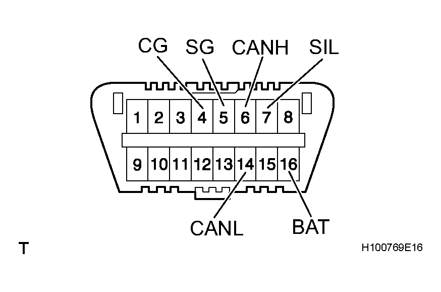
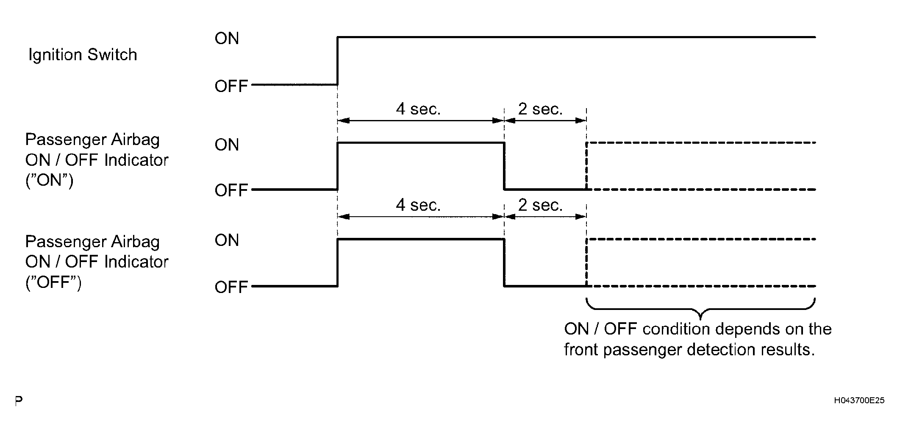

Diagnosis System
- CHECK DLC3
- The ECU uses ISO 15765-4 for communication. The terminal arrangement of the DLC3 complies with ISO 15031-3 and matches the ISO 15765-4 format.

Courtesy of © TOYOTA, LICENSE AGREEMENT TMS1002DLC3 CONNECTOR TERMINALS DESCRIPTIONSymbols (Terminal No.) Terminal Description Condition Specified Condition SIL (7) - SG (5) Bus "+" line During transmission Pulse generation CG (4) - Body ground Chassis ground Always Below 1 Ω SG (5) - Body ground Signal ground Always Below 1 Ω BAT (16) - Body ground Battery positive Always 11 to 14 V CANH (6) - CANL (14) HIGH-level CAN bus line Ignition switch OFF* 54 to 67 Ω CANH (6) - Battery positive HIGH-level CAN bus line Ignition switch OFF* 1 MΩ or higher CANH (6) - CG (4) HIGH-level CAN bus line Ignition switch OFF* 3 MΩ or higher CANL (14) - Battery positive LOW-level CAN bus line Ignition switch OFF* 1 MΩ or higher CANL (14) - CG (4) LOW-level CAN bus line Ignition switch OFF* 3 MΩ or higher NOTE: *: Before measuring the resistance, leave the vehicle as is for at least 1 minute and do not operate the ignition switch, any other switches or the doors.If the result is not as specified, the DLC3 may have a malfunction. Repair or replace the harness and connector.
HINT:
If the display shows a communication error message when connecting the cable of the intelligent tester to the DLC3, turning the ignition switch to the ON position and operating the intelligent tester, there is a problem on the vehicle side or tool side.
- If communication is normal when the tool is connected to another vehicle, inspect the DLC3 on the original vehicle.
- If communication is still not possible when the tool is connected to another vehicle, the problem is probably in the tool itself. Consult the Service Department listed in the tool's instruction manual.
- The ECU uses ISO 15765-4 for communication. The terminal arrangement of the DLC3 complies with ISO 15031-3 and matches the ISO 15765-4 format.
- SYMPTOM SIMULATION
HINT:
The most difficult case in troubleshooting is when no symptoms occur. In such cases, a thorough customer problem analysis must be carried out. Then the same or similar conditions and environment in which the problem occurred in the customer's vehicle should be simulated. No matter how experienced or skilled a technician may be, if he proceeds to troubleshoot without confirming the problem symptoms, he will likely overlook something important and make a wrong guess at some points in the repair operation.
This leads to a standstill in troubleshooting.
- Vibration method:
When vibration seems to be the major cause.
HINT:
Perform the simulation method only during the primary check period (for approximately 6 seconds after the ignition switch ON).
- Slightly vibrate the part of the sensor considered to be the problem cause with your fingers and check whether the malfunction occurs.
HINT:
Shaking the relays too strongly may result in open relays.
- Slightly shake the connector vertically and horizontally.
- Slightly shake the wire harness vertically and horizontally.
The connector joint and fulcrum of the vibration are the major areas to be checked thoroughly.
- Slightly vibrate the part of the sensor considered to be the problem cause with your fingers and check whether the malfunction occurs.
- Simulation method for DTC B1795:
Turn the ignition switch from OFF to ON, hold it for 10 seconds, and then turn it back to OFF. Repeat this procedure 50 times in a now.
HINT:
DTC B1795 is output if the occupant classification ECU receives the ignition switch OFF-ON-OFF signal 50 times in a row when a malfunction occurs in the power circuit for the occupant classification system.
- Vibration method:
- FUNCTION OF PASSENGER AIRBAG ON / OFF INDICATOR
- Initial check
- Turn the ignition switch ON.
- The passenger airbag ON / OFF indicator ("ON" and "OFF") comes on for approximately 4 seconds, then goes off for approximately 2 seconds.

Courtesy of © TOYOTA, LICENSE AGREEMENT TMS1002HINT:
When the occupant classification system has trouble, both the SRS warning light and the passenger airbag ON / OFF indicator ("OFF") come on. In this case, check the DTCs in the airbag system first.
- Approximately 6 seconds after the ignition switch is turned ON, the passenger airbag ON / OFF indicator will operate according to the front passenger seat condition shown below.FRONT PASSENGER SEAT CONDITION
Front Passenger Seat Condition ON Indicator OFF Indicator Vacant OFF OFF Adult is seated. ON OFF Child is seated. OFF ON Child restraint system is set. OFF ON Front passenger occupant classification system failure OFF ON
- Initial check
- CHECK PASSENGER AIRBAG ON / OFF INDICATOR
- Turn the ignition switch ON.
- Check that the passenger airbag ON / OFF indicator ("ON" and "OFF") comes on for approximately 4 seconds, then goes off for approximately 2 seconds.
HINT:
Refer to the table in the previous step regarding the passenger airbag ON / OFF indicator when the ignition switch is ON and approximately 6 seconds have elapsed.